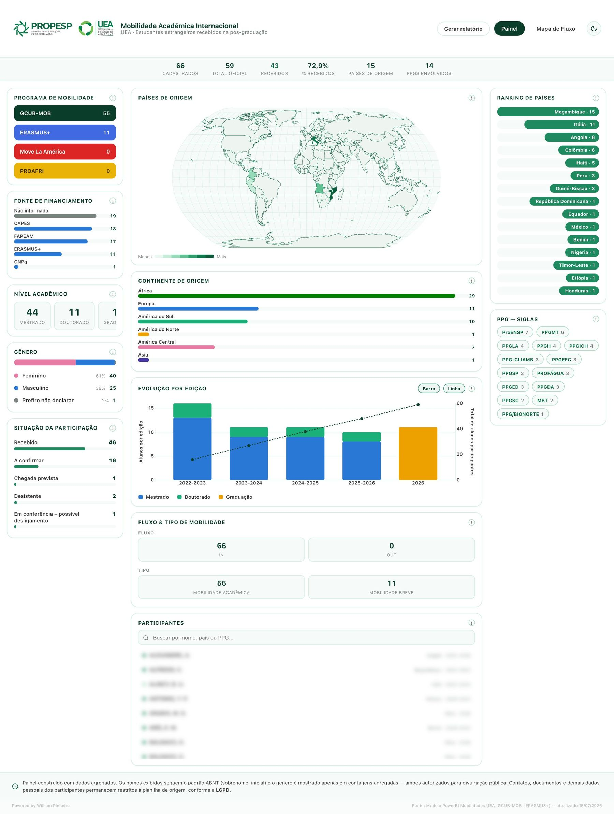
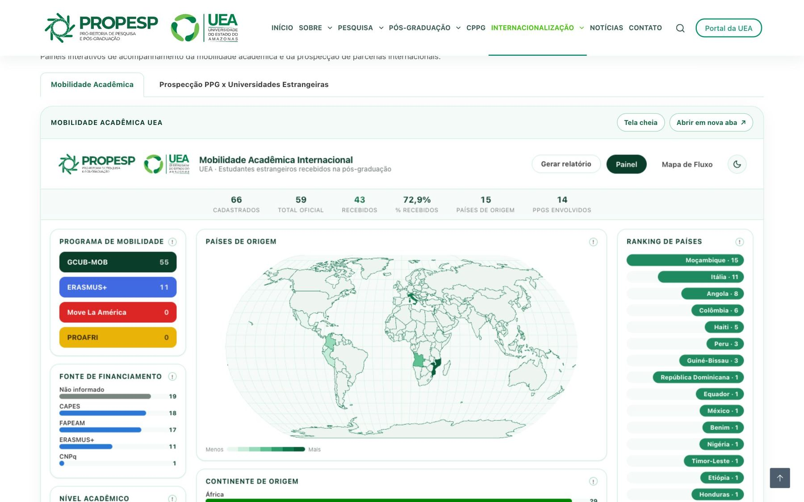
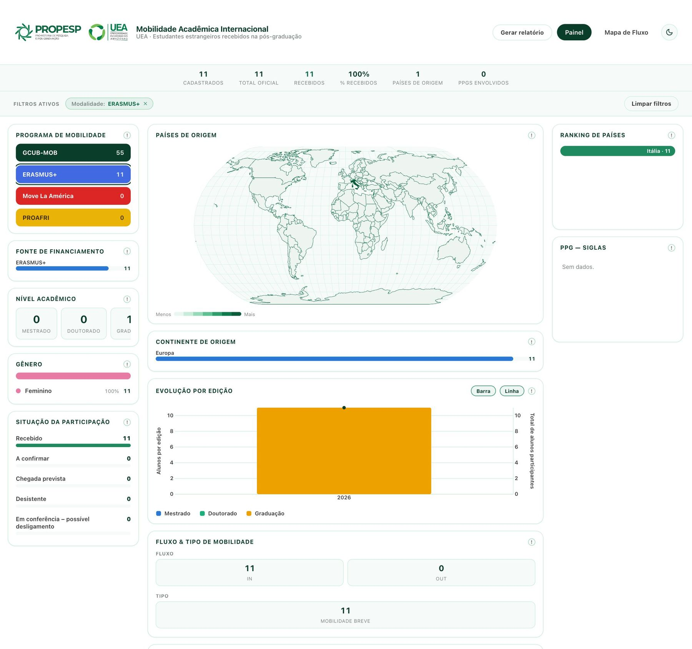
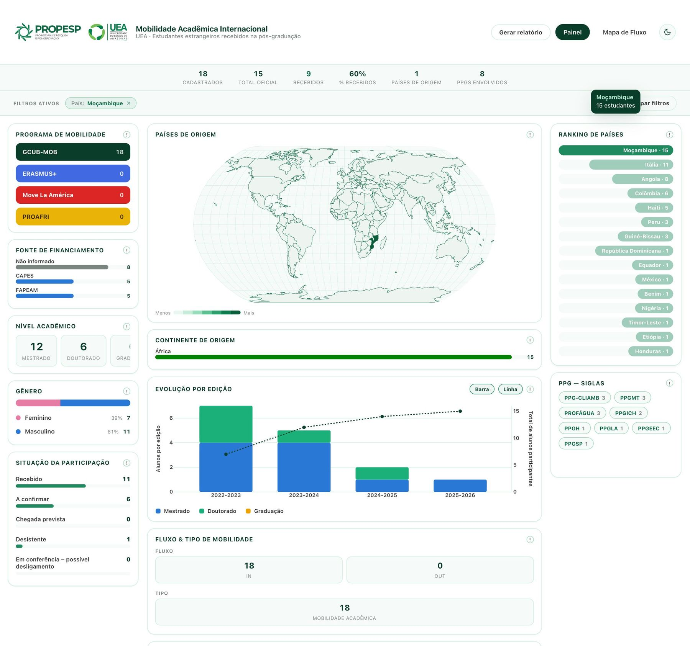
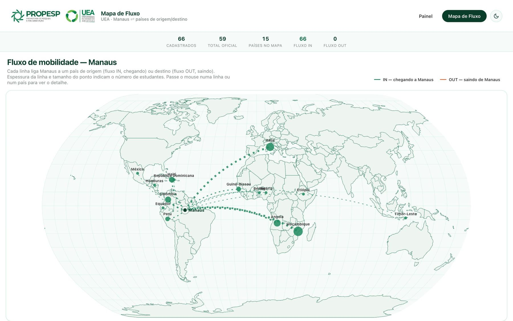
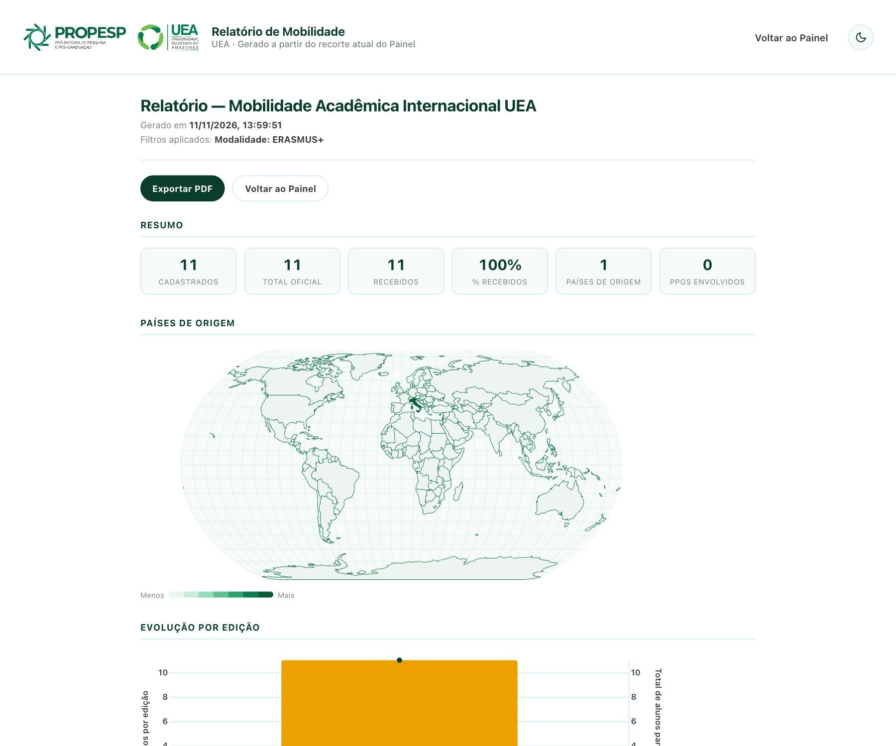

Tudo o que está na base
Inclui pendências e casos ainda em conferência. É o tamanho bruto do fluxo.
 Edição nº 3 · Novembro 2026
Edição nº 3 · Novembro 2026
Como ler o painel de Mobilidade Acadêmica Internacional: quem são, de onde vêm e em quais programas estão os estudantes estrangeiros recebidos pela pós-graduação da UEA.

Os painéis de Convênios e de Prospecção tratam de instituições e pesquisadores. Este trata de pessoas em movimento: os estudantes estrangeiros que vieram, ou estão vindo, fazer parte da sua formação na pós-graduação da UEA.
Da planilha-modelo de mobilidades mantida pela Internacionalização da PROPESP, com GCUB-MOB (55 registros) e ERASMUS+ (11). As modalidades Move La América e PROAFRI já aparecem no painel, ainda sem dados. A data da última atualização fica no rodapé do painel.
Veja também os outros guias da série: Painéis de Convênios e Prospecção de Parcerias.
A Mobilidade fica na mesma página da Prospecção, numa aba própria. É a aba que já aparece aberta quando a página carrega.
proreitoria.uea.edu.br/propesp no navegador. 12
12
12345Uma página só, sem rolagem lateral: indicadores no topo, perfil dos estudantes à esquerda, origem e evolução no centro e rankings à direita.
Inclui pendências e casos ainda em conferência. É o tamanho bruto do fluxo.
Exclui registros com inconsistências graves. É o número a citar em relatórios.
Estudantes com chegada confirmada em Manaus, entre os oficiais. O % recebidos compara os dois.
Aqui não há menus de filtro: quase tudo no painel é clicável. Clique num programa, num país, num nível ou num PPG e o painel inteiro se recalcula para aquele recorte.
| Quadro | Clique em… | Filtra por |
|---|---|---|
| Programa de mobilidade | um dos botões coloridos | modalidade (GCUB-MOB, ERASMUS+…) |
| Fonte de financiamento | uma barra | agência financiadora |
| Nível acadêmico | um ou mais cartões | mestrado, doutorado, graduação (aceita vários) |
| Situação da participação | uma linha | recebido, a confirmar etc. |
| Continente de origem | uma barra | continente |
| Ranking de países / mapa | uma barra ou um país | país de origem |
| PPG · Siglas | uma sigla | programa de pós-graduação da UEA |

12✓
1✓Os filtros ficam guardados no seu navegador: se fechar e abrir o painel de novo, ele volta como estava. Se os números parecerem “pequenos demais”, confira a barra Filtros ativos e clique em Limpar filtros.
Um mapa-múndi com linhas ligando Manaus aos países de origem (fluxo IN) e, quando houver, aos de destino (fluxo OUT). Espessura da linha e tamanho do ponto mostram o número de estudantes.

1234Hoje a base registra só estudantes recebidos pela UEA. O cartão OUT já existe e passa a ter números quando as saídas (por exemplo, ERASMUS+ de estudantes da UEA para fora) começarem a ser registradas.
O botão Gerar relatório abre uma página com todas as tabelas e gráficos do recorte filtrado, pronta para exportar em PDF.

1234O relatório traz a lista de participantes com nomes no padrão ABNT, que é público e autorizado. Mesmo assim, ao enviar por e-mail ou anexar a processos, mande só o recorte necessário (por exemplo, apenas o seu PPG).
Receber estudantes estrangeiros é internacionalização “em casa”. O painel ajuda a medir, planejar e cuidar desse fluxo.
Filtre pela sigla do programa: número de estrangeiros, países, níveis e edições descrevem a atratividade internacional no relatório anual.
Onde: PPG · Siglas → Gerar relatório
Filtre a situação “A confirmar” ou “Chegada prevista” para antecipar orientador, moradia e documentação junto à Internacionalização.
Onde: Situação da participação
Desistentes e casos “em conferência” mostram onde o acompanhamento precisa ser reforçado.
Onde: Situação da participação
A evolução por edição e o filtro por programa mostram quanto o PPG já recebeu em cada modalidade e ajudam a decidir quantas vagas ofertar.
Onde: Programa de mobilidade + Evolução
Países que mais enviam estudantes ao PPG são candidatos naturais a acordos. Cruze com os painéis de Convênios e de Prospecção.
Onde: Ranking de países → guias de Convênios e Prospecção
A fonte de financiamento mostra a dependência de cada agência e os casos “não informado” que precisam ser corrigidos na base.
Onde: Fonte de financiamento
Os passos numerados têm uma caixinha “feito”, salva só neste navegador.
Os números contam mobilidades, não pessoas, e passam por conferência. Saber disso evita leituras erradas.
O total oficial exclui registros com inconsistências graves ainda em conferência. Para relatórios, use o total oficial; para planejamento interno, os cadastrados mostram o fluxo completo.
Sim. A base conta mobilidades: quem fez duas mobilidades aparece duas vezes.
Mapa, continente e tabelas por país e PPG usam só os registros aptos para indicadores oficiais; outros quadros mostram todos os cadastrados. A explicação de cada quadro está no ícone (!).
Somente o nome no padrão ABNT (sobrenome e iniciais) e o gênero em totais agregados, ambos autorizados pela UEA/PROPESP para divulgação. Contatos, documentos e acompanhamento individual ficam restritos à planilha de origem, conforme a LGPD.
Informe a Internacionalização da PROPESP (internacionalizacao@uea.edu.br). A correção é feita na planilha de origem e entra na próxima atualização do painel.
Guia da Mobilidade Acadêmica · PROPESP / UEA · Edição nº 3, novembro de 2026. Prints e números consultados em 11/11/2026; nomes de participantes desfocados nos prints.
Autoria: William Pinheiro · Currículo Lattes